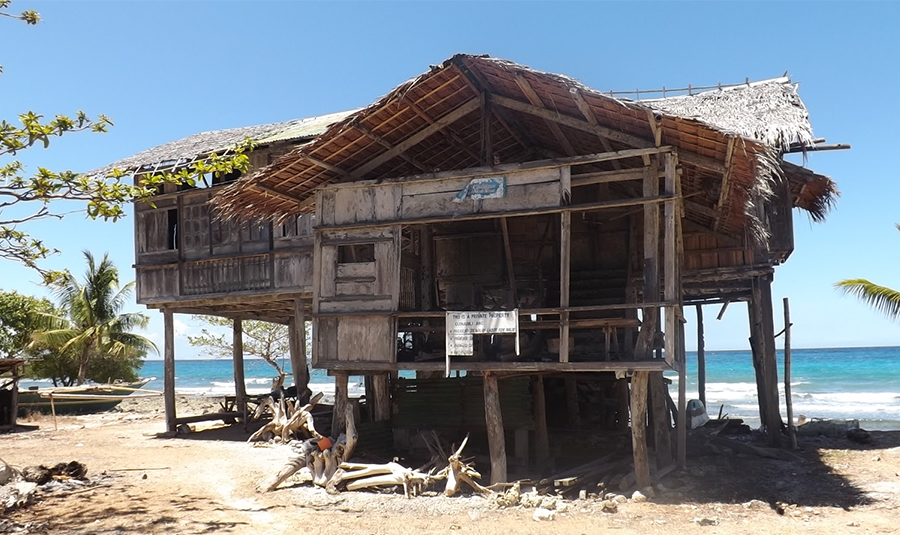
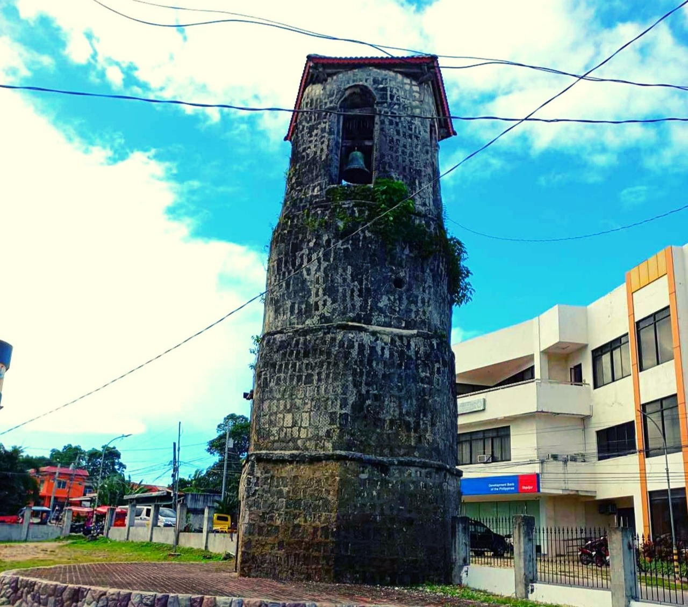
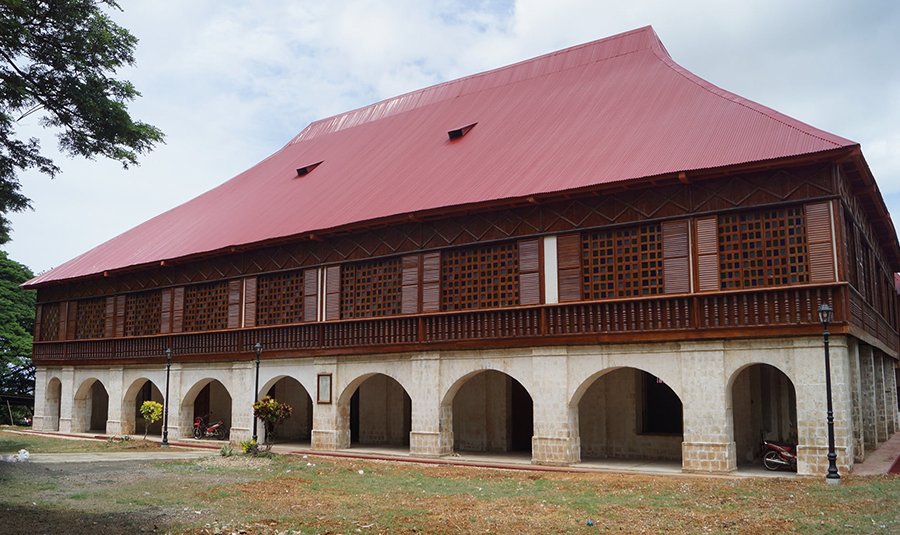
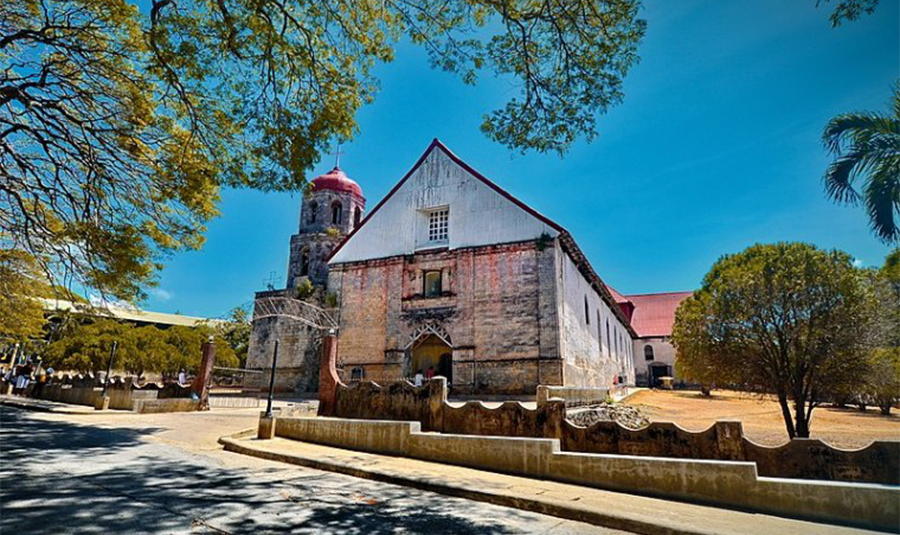

Old House
Where stories of the past echo through weathered walls.

Watch Tower
Standing tall to guard the legacy of time.

Old Convent
A sanctuary of silence, prayer, and resilience.

Lazi Church
A timeless symbol of faith and Filipino heritage.